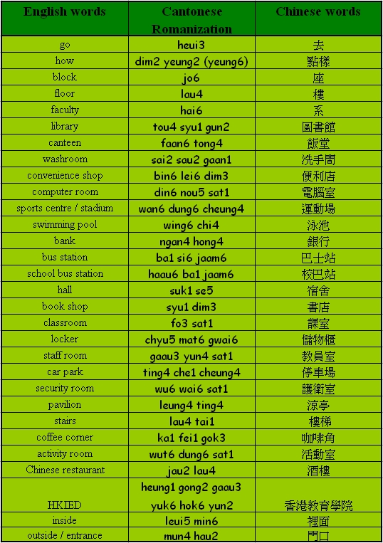

Unit 7 Getting Around
Unit 7 Getting Around 
Objectives
- To recognize and pronounce Cantonese words with the initials [d], [l], [t], [w], [ch];.
- To recognize and pronounce Cantonese words with the finals [i], [u], [ai], [au], [ong];.
- To use simple Cantonese vocabulary and expressions in talking about places.
Warm up Work together.
- What is the time right now?
- Can you ask your partner ‘sik6 jo2 mann5 faan6 mei6 a3?’ How does he / she reply?
Vocabularies

Sentence structure
“hai2” – describing location (S hai2 place word)
“hai2” as a co-verb meaning ‘in’, ‘on’ or ‘at’, and usually comes before place word.
The library is on the ground floor of Block C.
圖書館喺C座地下。
[tou4 syu1 gun2 hai2 C jo6 dei6 ha2.]
I am at the library.
我喺圖書館。
[ngo5 hai2 tou4 syu1 gun2.]
Conversation Practice with a partner.
Scene: Sally and Linda are walking around the school campus.
Sally: Do you know how to go to the computer room?
你知唔知點樣去電腦室呀？
[nei5 ji1 ng4 ji1 dim2 yeung6 heui3 din6 nou5 sat1 a3?]
Linda: It is on the LP floor of Block C.
電腦室喺B1座LP。
[din6 nou5 sat1 hai2 B1 jo6 LP.]
Sally: Where are you going?
你而家去邊度？
[nei5 yi4 ga1 heui3 bin1 dou6?]
Linda: I have to go to library.
我要去圖書館。
[ngo5 yiu3 heui3 tou4 syu1 gun2.]
Linda: Oh, I have to go to the lockers to get the books first.
不過我要去儲物櫃攞書先。
[bat1 gwo3 ngo5 yiu3 heui3 chyu5 mat6 gwai6 lo5 syu1 sin1.]
Sally: Can I meet you outside the student canteen at one o’clock?
不如我哋一點鐘喺學生飯堂門口等吖？
[bat1 yu4 ngo5 dei6 yat1 dim2 jung1 hai2 hok6 sang1 faan6 tong4 mun4 hau2 dang2 a1?]
Quiz
- Can you say the following words in Cantonese – ‘stop, please’?
- Do you know which form of transport you can take in order to go to Taipo Centre?
- Do you need to ‘maai5 fei1’ if you want to take the school bus?